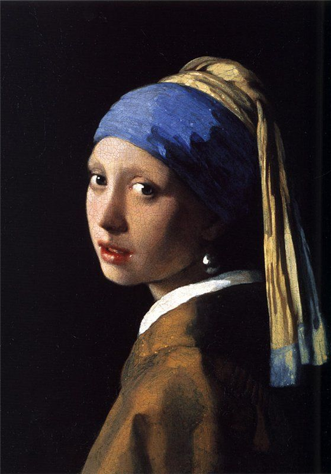
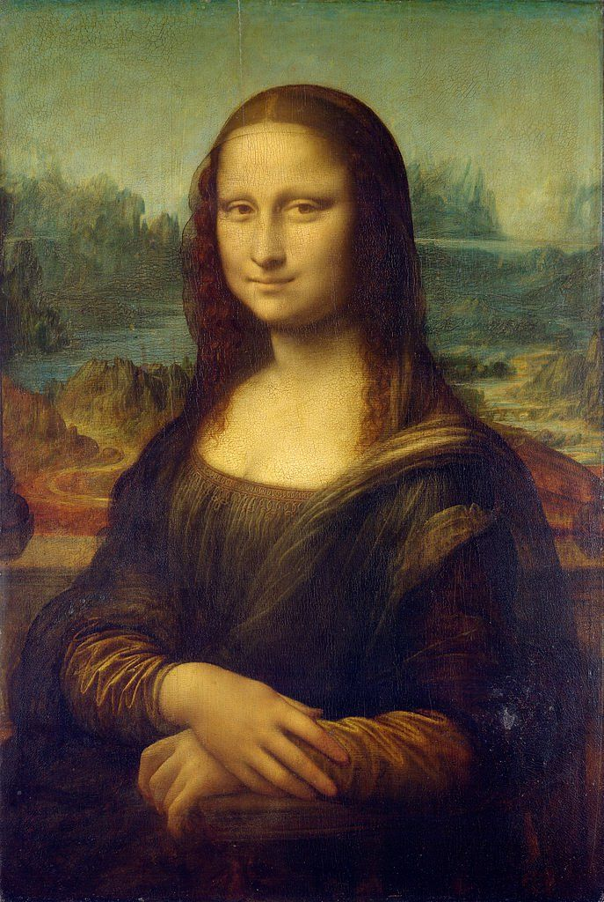

მე ძალიან მიყვარს ხატვა და ზოგადად ხელოვნება. ეს არის ჩემი კომფორტის ზონა და მასსზე საუბარი ძალიან მიყვარს. მხატვრები და მათი ნახატების დახასიათება. ფერები და მხატვრობის სხვადასხვა მიმდინარეობა
irl with a Pearl Earring (Dutch: Meisje met de parel) is an oil painting by Dutch Golden Age painter Johannes Vermeer, dated c. 1665. Going by various names over the centuries, it became known by its present title towards the end of the 20th century because of the earring worn by the girl portrayed there. The work has been in the collection of the Mauritshuis in The Hague since 1902 and has been the subject of various literary and cinematic treatments.
The Mona Lisa[a] is a half-length portrait painting by the Italian artist Leonardo da Vinci. Considered an archetypal masterpiece of the Italian Renaissance, it has been described as "the best known, the most visited, the most written about, the most sung about, [and] the most parodied work of art in the world." The painting's novel qualities include the subject's enigmatic expression, monumentality of the composition, the subtle modelling of forms, and the atmospheric illusionism. The painting has been traditionally considered to depict the Italian noblewoman Lisa del Giocondo. It is painted in oil on a white poplar panel. Leonardo never gave the painting to the Giocondo family. It was believed to have been painted between 1503 and 1506; however, Leonardo may have continued working on it as late as 1517. King Francis I of France acquired the Mona Lisa after Leonardo's death in 1519, and it is now the property of the French Republic. It has normally been on display at the Louvre in Paris since 1797. The painting's global fame and popularity partly stem from its 1911 theft by Vincenzo Peruggia, who attributed his actions to Italian patriotism—a belief it should belong to Italy. The theft and subsequent recovery in 1914 generated unprecedented publicity for an art theft, and led to the publication of many cultural depictions such as the 1915 opera Mona Lisa, two early 1930s films (The Theft of the Mona Lisa and Arsène Lupin), and the song "Mona Lisa" recorded by Nat King Cole—one of the most successful songs of the 1950s. The Mona Lisa is one of the most valuable paintings in the world. It holds the Guinness World Record for the highest known painting insurance valuation in history at US$100 million in 1962, equivalent to $1 billion as of 2023.